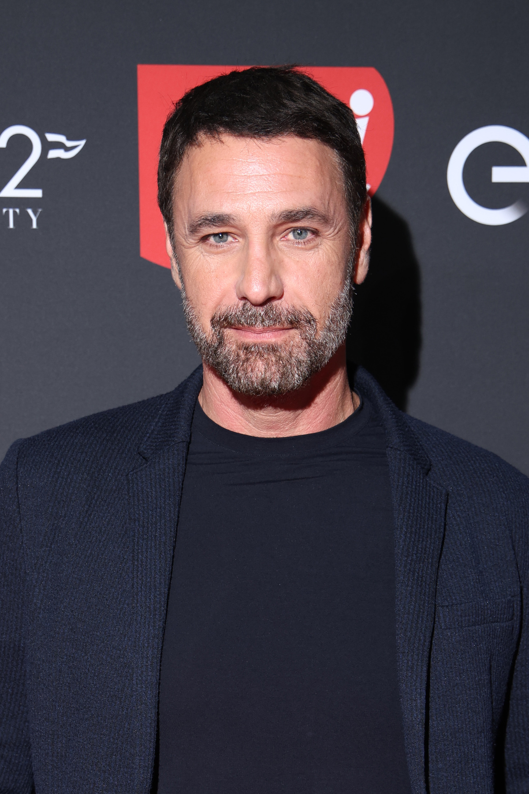

L'attore ascoltato in Procura. “Ho ribadito le ragioni della denuncia”. Gli audio, diffusi senza consenso, riguardano una conversazione privata via chat tra l'attore e una modella. Il contenuto è stato successivamente rilanciato sui social

Nell'ambito dell'indagine sugli audio rubati all'attore Raoul Bova, la Procura di Roma ha iscritto nel
registro degli indagati il pr Federico Monzino. Nel procedimento si ipotizza il reato di tentata estorsione.
Su mandato dei pm nelle scorse settimane il cellulare di Monzino era stato sequestrato dagli investigatori.
Proprio oggi Raoul Bova è stato ascoltato per circa un'ora in Procura, a Roma, in relazione all'indagine che lo vede parte offesa
sul caso degli audio rubati. I pm di piazzale Clodio procedono per il reato di tentata estorsione ai danni dell'attore.
Gli audio, diffusi senza consenso, riguardano una conversazione privata via chat tra l'attore e l'influencer Martina Ceretti.
Il contenuto è stato successivamente rilanciato sui social.
La vicenda era iniziata quando sul telefono dell'attore era arrivato un messaggio da un numero sconosciuto, in cui un mittente ignoto
lo aveva avvisato che gli audio potessero essere diffusi per danneggiarlo. Il riferimento è alle conversazioni intime che sarebbero state indirizzate
da Bova alla modella e influencer Martina Ceretti. Nessuna richiesta esplicita di denaro - riferisce Repubblica - ma il senso è chiaro.
Bova non risponde e qualche giorno dopo le chat vengono divulgate da Fabrizio Corona, nel suo podcast Falsissimo.
“Nel corso dell'atto istruttorio il mio assistito - spiega il legale David Leggi - ha ribadito le ragioni della sua denuncia evidenziando
la pressione ricattatoria dei messaggi ricevuti nelle scorse settimane”.
Un momento complesso per lo stesso Bova, Rocío Muñoz Morales e le due figlie, Luna e Alma, nate rispettivamente nel 2015 e 2018.
“Sto attraversando un momento difficile, non lo nego, ma posso dire che stanno succedendo tante cose bellissime e me le godo fino in fondo”
ha aggiunto parlando nel Centro di Produzione Rai di Napoli nel corso della conferenza stampa di presentazione del programma ‘Freeze - Chi sta fermo vince!’
che condurrà (il 16 settembre la prima puntata su Rai2) con Nicola Savino.
“La televisione, l'intrattenimento sono il mio lavoro, sono vitamina insieme con le mie due meravigliose figlie; questo progetto Rai-Fremantle è un grandissimo regalo
che riempie il mio cuore e mi fa sorridere non in maniera superficiale, e fare questo programma mi sta facendo del bene. Ho fatto una scelta molto ponderata che è quella del silenzio
perché voglio tutelare la cosa più preziosa che ho nella vita che sono le mie figlie e, quindi, voglio continuare a seguire questa strada che è quella che mi appartiene e che ho dentro al cuore”
ha dichiarato Morales risponde a una domanda sulla sua vita privata e sulle ultime dichiarazioni di Bova, ospite domenica 14 settembre a Verissimo.
“Il mio non parlare non è perché mi devo nascondere dietro a un dito; è semplicemente perché in questo momento la priorità sono le mie due figlie. Lui ha deciso di parlare, io preferisco non farlo.
La verità la conosco molto bene, ma la sa anche Raoul. Poi lui è libero di dire quello che vuole, è libero di farlo”.
Realizzata da Rai
Sito creato da Alessandro Naschetti